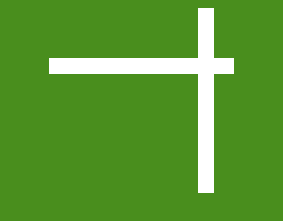

Iconography — custom marks per zone + Lucide for UI
Custom marks


PNG / SVG, per zone. Never re-traced.
Lucide — UI glyphs, stroke 1.75, currentColor
No emoji as iconography. No unicode arrows in buttons.
